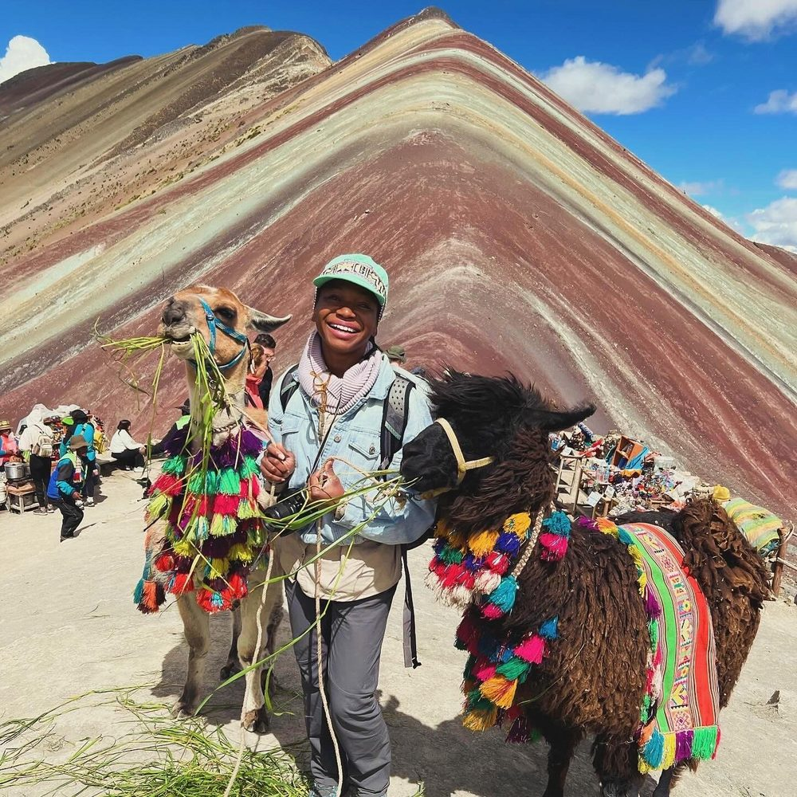
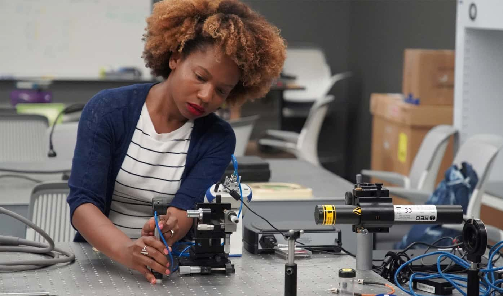

WatchNetflix Experiences · 2025Netflix House Philadelphia: Drone Fly-Through
WatchNetflix Experiences · 2025Netflix House Philadelphia: Drone Fly-ThroughGenell Zuciya · I Love Photons
Immersive Experience DesignerSystems TranslatorPhoton Wrangler
GenellZuciya
I design what lives in between. Between science and wonder, between people and systems, between a photon leaving its source and the moment it becomes part of an orchestrated story and built world.
- U.S. Patent3D scanning laser display systems, granted 2018
- 3× THEA Award2017, 2018 and 2021, Walt Disney Imagineering
- IAAPA Honors 2025Top location-based experience, Meow Wolf Grapevine
- ILDA Award 20131st place, multimedia show with laser integration
- M.S. BiomimicryArizona State University · Certified Biomimicry Professional
The Practice
“Photon wrangling: the orchestration of light as a storytelling and perceptual medium.”
From ILDA award-winning laser design to Disney Imagineering's 3D scanning laser display systems, light has always been both the medium and the message. Every project is a new experiment in how photons shape human perception.
Selected Work
Immersive Worlds
Twenty years of orchestrating light, fire, space, and story: spanning pyrotechnic spectaculars, laser systems, themed environments, and museum experiences across five continents.
Netflix Experiences
2025Technical Management, Contract Position. Advancing experiential systems from early concept through live deployment across Philadelphia, Dallas, and Las Vegas.
WatchNetflix Experiences · 2025Netflix House Philadelphia: Drone Fly-ThroughNational Civil Rights Museum
Memphis, TN · Opening Spring 2026Creative Director, Art Processors. I led interpretive design and narrative systems for the Legacy Building renovation, translating Dr. King's 1967 vision of "Where Do We Go From Here" into five immersive gallery experiences exploring poverty, education, housing, gender equity, and nonviolence. The work required designing emotional journeys through living history with equal parts rigor and care.

Meow Wolf
2019 to 2023Senior Creative Director across three permanent immersive installations, including an IAAPA Honors win for the top location-based experience in the world.
Product Design · Meow Wolf · House of Eternal Return · Santa Fe
A fan that's three things at once: IP affinity object, live exhibition activator, and at-home AR portal.
Guests who loved the Obsidiopolis world could purchase a fan embedded with RFID, triggering a real-time state change in the room when brought near the activation point. Flip it over and a QR code unlocks an AR overlay at home, deepening their connection to the IP long after they leave. Beautiful Obsidiopolis art on the outside, magic on the inside.
 WatchProduct Design · House of Eternal ReturnThe Obsidiopolis Fan
WatchProduct Design · House of Eternal ReturnThe Obsidiopolis FanRFID-embedded fan with Obsidiopolis art. Triggers a room state change in the exhibition and unlocks an AR story at home via QR.
 WatchInteractive · RFID State Change · In ExhibitionFan Activates the Room
WatchInteractive · RFID State Change · In ExhibitionFan Activates the RoomBringing the fan near the activation point triggers a live AVL state change inside the Obsidiopolis exhibition space.
House of Eternal Return · COVID Era · 2020 to 2021
The exhibit was closed. The work didn't stop.
When COVID shuttered House of Eternal Return, I was appointed lead creative director to keep our team creating and our fans connected. We launched Robot Radio, a live parking lot radio station with a temporary technology installation that awakened the robot outside the building. We designed AR filters so fans could bring the Meow Wolf universe into their homes. We remodeled the retail, F&B, and bathroom spaces, redesigned guest flow, and built no-touch QR storytelling collectibles for the eventual reopening. The Meow Wolf world kept growing until the portal could re-open.
 WatchMeow Wolf · Renovation · 2021House of Eternal Return: Upgraded
WatchMeow Wolf · Renovation · 2021House of Eternal Return: UpgradedTour and interview showcasing the COVID-era renovations: new F&B and retail areas, pathway redesign, and no-touch QR storytelling experiences.
 WatchMeow Wolf · Marketing · 2021The Portal Is Now Open
WatchMeow Wolf · Marketing · 2021The Portal Is Now OpenLed the reopening marketing campaign for House of Eternal Return following the COVID-era renovation and redesign.
Walt Disney Imagineering
2014 to 2019Five years, four continents, five THEA Awards, and a U.S. patent. Bringing perception-driven systems to the world's most ambitious theme park attractions.
 WatchImage Engineering · Shanghai Disneyland · 2016Pirates of the Caribbean: Battle for the Sunken Treasure
WatchImage Engineering · Shanghai Disneyland · 2016Pirates of the Caribbean: Battle for the Sunken TreasureTHEA Award 2017. Imaging Engineer and Color Scientist on the Shanghai Disneyland opening team. One of the most technically ambitious dark rides ever built.
 WatchThemed Entertainment · Disney Imagineering · 2017Avatar: Flight of Passage
WatchThemed Entertainment · Disney Imagineering · 2017Avatar: Flight of PassageTHEA Award 2018 · VES Award 2018 for Outstanding Visual Effects in a Special Venue. I conducted applied R&D on perception-driven systems, using optical modeling and human sensory response to design a 3D image engineering system that puts riders on the back of a banshee at 10K resolution, 60fps stereo.
 WatchThemed Entertainment · Disney Imagineering · 2019Star Wars: Rise of the Resistance
WatchThemed Entertainment · Disney Imagineering · 2019Star Wars: Rise of the ResistanceTHEA Award 2021. Lead Special Effects Designer and Video Talent. One of the most technically complex theme park experiences ever built, combining practical effects, projection, pyrotechnics, and live action performance across a continuous 28-minute narrative.
Image Engineering
2008 to 2014Where it all began: pyrotechnics, lasers, and live spectaculars that laid the foundation for everything that followed.
 WatchLasers · 2011Adult Swim Upfront at Roseland Ballroom
WatchLasers · 2011Adult Swim Upfront at Roseland BallroomLead Laser Programmer and Designer. Laser design and programming for the Adult Swim Upfront at Roseland Ballroom for media buyers and network stakeholders.
Laser Programmer. Seven cities, seven nights, seven countries.
Lead Laser Designer and Programmer. Full-ice laser spectacular for the Nashville Predators.
Creative Director. Laser graphics and pyro programming. ILDA 2013, 1st Place.
Laser Programmer and Creative Director. Bicentennial celebration for America's oldest natural science museum.
Articles & Features
In the press
Conversations and coverage about light, story, and the systems behind immersive worlds.
Attractions Management · Vol 30, Issue 1 · Technology
Guiding Light
“Lighting is my favourite tool to create authenticity in storytelling.”
The self-described photon wrangler talks to Magali Robathan about emotion, AI, and looking to nature for inspiration, from Disney Imagineering and Meow Wolf's Radio Tave to the National Civil Rights Museum and the Louisiana Music Museum.
The Baltimore Sun · Front page · December 4, 2009
Holiday lights at the Washington Monument
Mount Vernon Place, Baltimore. Lead Pyrotechnic Designer and Pyrotechnician, Image Engineering.

About Genell
Creative technologist, inventor, biomimic.
Genell Zuciya is a creative technologist, inventor, biomimicry professional and experiential creative director with nearly two decades of work across Walt Disney Imagineering, Netflix, and Meow Wolf. She specializes in large-scale immersive design, innovation strategy, and concept-to-deployment development at the intersection of technology, storytelling, and systems thinking.
She has a Master's in Biomimicry and has done field work in 6 different ecosystems. As the Founder of Nexus Lab Space, Genell is always looking to collaborate through roles in experiential innovation and human-centered design.
“Genell is a great creative professional with high-level skills in laser and pyrotechnic show design and execution. She is client-focused, detail-oriented, a great team player, and a joy to work with!”
Mario D'Ambrosio

Resume
A Systems Thinker's Journey
Across disciplines, frameworks, and continents, each chapter builds on the last. Click any chapter below to explore the combined paths that paint the picture of who I am and how I work.
Download resume (PDF)May 2025 to PresentNetflixTechnology Management, Experiences Division (Contract)I advance experiential systems based on Netflix IP from early concept through live deployment, bridging creative vision and technical execution at scale.
Projects
- Netflix House PhiladelphiaOpened November 2025 · Led technical and operational remediation in real-world environments · Created and documented processes for factory acceptance testing and site acceptance testing
- Netflix House DallasOpened December 2025 · Led technical and operational remediation in real-world environments · Created and documented processes for factory acceptance testing and site acceptance testing
- Netflix House Las VegasIn development · Contributing to blue sky and concept-level technical infrastructure planning
Innovation & Leadership
- Systemic Failure-Point Analysis & Rapid MitigationI identify systemic failure points across vendors and platforms · Leading rapid mitigation strategies to stabilize and scale new experiences · Leveraging agentic AI for deeper systems analysis
Aug 2023 to Feb 2025Art ProcessorsCreative Director, Citizen DesignerI directed interpretive design and museum experiences that make science and history accessible, spark dialogue, and empower communities.
Key Projects
- National Civil Rights MuseumMemphis, TN · Opening 2026 · I led creative direction of interpretive narrative interactives, grounded in emotional journey mapping to determine the most impactful delivery for each story, including contributions from my own family history
- Louisiana Music MuseumLafayette, LA · I led the creative vision for a winning proposal in a highly competitive market to tell the story of Louisiana's music history
Personal Development
- Certified Death DoulaWorking on memorial sites required me to make peace with death in order to tell those stories with authenticity and care
- Banjo Fellow, Oakland Public Conservatory of MusicI began studying banjo in Apr 2024 to reconnect with my African American cultural roots while working on the Civil Rights Museum · Applied May 2025, accepted Oct 2025 · Currently performing in the 2026 fellowship cohort
Dec 2019 to May 2023Meow WolfSenior Creative DirectorI led immersive, world-building experiences through holocratic creative frameworks, decentralized decision-making, nonlinear storytelling, and custom interactive design.
Installations
- House of Eternal ReturnSanta Fe, NM · I led the COVID-era redesign: F&B and retail area redesign, exhibition pinch point analysis and pathway redesign, low and no-touch QR storytelling collectibles, parking lot activations while the main exhibit was closed
- The Real UnrealGrapevine, TX · Led immersive world-building from concept through opening
- Radio TaveHouston, TX · Directed new narrative & IP development · Led two additional creative directors in the vision of their spaces · Creative lead over Theta Theater, co-creative lead over Cowboix Hevvven and Obsidiodessey
Innovation
- Blacklight Color Mapping, Product Design (Theta Theater)Creative Director · I initiated a vendor partnership to develop a proprietary color mapping formula, revealing a completely hidden visual layer under UV light
- Obsidiopolis Fans: RFID Activation ObjectProduct design · I directed the design of purchasable fans with embedded RFID that triggered AVL state changes in-room, plus a QR code unlocking an AR portal at home to deepen the guest's connection with the IP
Awards
- IAAPA Honors 2025: Top Location-Based Experience Project: Meow Wolf GrapevineRole: Senior Creative Director
May 2014 to Dec 2019Walt Disney ImagineeringLead Imaging & Electronic EngineerI directed the development of custom optical illusions, projection systems, and animation technologies for world-class Disney park attractions across four continents.
Systems thinking in action: Each new global assignment demanded not just technical skill, but cultural fluency. I pursued language study and technical certifications in parallel to prepare for each challenge.
Certifications & Study
- Certificate of Proficiency, Precision OpticsIrvine Valley College (IVC) · Advanced study in precision optics to support global deployment
- Certificate of Proficiency, PhotonicsIrvine Valley College (IVC) · Advanced study in photonics to support imaging technology development
- Mandarin Language StudyStrategic language acquisition ahead of Shanghai deployment
- French Language StudyStrategic language acquisition ahead of Paris deployment
Attractions & Installations
- Shanghai Disney ResortRelocated to Shanghai for 8 months to lead special effects teams through base park build and finish · Led special effects (laser and flame) and imaging engineering across Pirates of the Caribbean: Battle for the Sunken Treasure, TRON Lightcycle Power Run, Castle Storybook Experience, Seven Dwarfs Mine Train, and Soarin' Around the World · Developed animation for Voyage to the Crystal Grotto, handing off to VFX teams for field implementation · Led FX animation for Peter Pan and Seven Dwarfs Mine Train
- Disneyland Paris: Hyperspace MountainLed special effects design & installation
- Hong Kong Disneyland: Hyperspace MountainLed special effects design & installation
- Soarin' Around the World (Disney California Adventure)Imaging technology specialist: alignment, boresight, and technical calibration
- Avatar Flight of Passage (Disney's Animal Kingdom)Imaging technology specialist: cutting-edge 3D alignment, boresight, and technical calibration
- Star Wars: Galaxy's Edge, Rise of the ResistanceLead special effects designer, animator, and integrator · CA & FL installations
- Avengers Campus: Spider-Man Web SlingersLead imaging engineer
Awards & Patent
- THEA Award 2021: Star Wars: Rise of the ResistanceOutstanding Achievement · Role: Lead Special Effects Designer & Video Talent
- U.S. Patent (Granted 2018): 3D Scanning Laser Display SystemsInventor · Scanning laser-based 3D display systems for viewers wearing 3D glasses
- THEA Award 2018: Avatar: Flight of PassageOutstanding Achievement (Pandora: The World of Avatar) · Role: Image Engineering
- THEA Award 2017: Pirates of the Caribbean: Battle for the Sunken TreasureOutstanding Achievement (Shanghai Disneyland) · Role: Special Effects & Image Engineering
Mar 2008 to May 2014Image EngineeringSpecial Effects Technician → Lead Pyrotechnic Designer → Director of Special Effects DesignI joined the founding team of a startup special effects company, establishing the systems, workflows, and teams behind sports and touring effects from the ground up. Six years, two promotions, and leadership across every facet of large-scale live spectaculars.
Building from the ground up: Joining a startup meant learning everything: hands-on, fast, and across disciplines. This start with a cross-functional role helped cultivate my early systems thinking approach and fearless adaptability.
Career Progression
- Special Effects TechnicianMar 2008 to Dec 2009 · Building foundational expertise across pyro, lasers, and live production
- Lead Pyrotechnic DesignerJan 2010 to Dec 2011 · Directing fireworks design and overseeing show execution
- Director of Special Effects DesignJan 2012 to May 2014 · Leading creative direction for laser, pyro, and video experiences
Licenses & Certifications
- Pyrotechnic Licenses: Multi-StateMaryland, North Carolina, Delaware, New York
- ATF Federal Explosives LicenseOverseeing fireworks inventory and regulatory compliance
Key Work
- Kevin Hart: Let Me Explain, Special Effects SupervisorIMDB credited · Laser & flame effects for the concert film
- Laser Show Design & ProgrammingDirected laser-based storytelling experiences
- Academy of Natural Sciences: BicentennialDeveloped proprietary presentation systems
- Large-Scale Video ExperiencesDirected immersive video concept development & installation
Awards
- ILDA Award 2013: 1st Place, Multimedia Show with Laser IntegrationRole: Creative Director & Pyrotechnic Programmer
2007 to 2009IATSE Local #19, BaltimoreStagehand · Video Technician · Licensed PyrotechnicianDispatched across Baltimore's premier venues including the Hippodrome Theatre, Lyric Baltimore, Merriweather Post Pavilion, and the Baltimore Convention Center. Primarily assigned to pyrotechnic and video crews operating LED wall systems and projection for touring Broadway productions, concerts, and large-scale events.
Education
2021 to 2025Arizona State UniversityMaster of Science, BiomimicryI studied living systems to inform regenerative design, social innovation, and sustainable futures.
Dual Track
- Certified Biomimicry Professional, Biomimicry 3.8I was selected to form a small sub-cohort from top performers in the master's program · Over two years, we traveled to 6 ecosystems to practice biomimicry fieldwork and study local ecological systems
Areas of Focus
- Nature-Inspired DesignRigorous study of functions, forms, and biological systems across scales, from chemistry and material science to macro structures, translated into human-centered design applications
- Regenerative & Systems ThinkingApplied research in community resilience and equitable collaboration models
- Bio-Inspired Social InnovationApplied research in ecological intelligence for sustainable systems
Graduate Thesis Project
- LeafQuest: NFC-Enabled Biomimicry Learning GameI conceived, designed, and prototyped an interactive flashcard system with embedded NFC chips that teaches children (grades 3 to 7) about leaf morphology and systems thinking through gamified play · 4 scaffolded levels of NFC identification (shape → margin → venation → full morphology match) · Bioinspired hybrid feedback loops deliver multisensory light & sound responses · Grounded in Universal Design for Learning, cognitive development research, and experiential graphic design
Community & Membership
MISSMinorities in Shark Sciences
Through my biomimicry studies, I found myself deeply connected to the systems and structures found in marine sciences; fluid dynamics, structural color, biological adaptations. I joined MISS to be part of a community dedicated to the preservation of shark and marine ecosystems and to support the next generation of minority scientists doing that work.
Member since 2023AWGAssociation for Women Geoscientists
I became deeply fascinated by paleoclimatology, the idea that an ecosystem's entire narrative is written directly into the environment itself, readable through tree rings, ice cores, coral cores, and the geological record. I joined AWG and was awarded a scholarship to join them in field observations in Nova Scotia and Newfoundland.
Member since 20232003 to 2007Drexel UniversityBachelor of Science, Film & VideoWhere it all began. My foundation in visual storytelling, production, and a hunger to see the world through a lens.
The through-line: A global instinct from the start. Studying Japanese language and film in Tokyo, then working on film sets in Greece, long before Disney would send me around the world.
Study Abroad
- Temple University Japan, TokyoAug to Dec 2005 · Japanese language and film studies abroad
Work Abroad
- Indigo View, Crete, GreeceApr to Sep 2006 · Film production abroad
Ventures
2025 to PresentNexus Lab SpaceFounding DirectorI founded a hands-on innovation hub where science, creativity, and community converge to create systems-level change. We guide organizations, communities, and individuals in turning bold ideas into purposeful action shaping sustainable and regenerative futures.
The nexus: A powerful central link where nature-inspired ideas, emerging technologies, and social impact strategies meet. From Legos to lasers, we use physical materials and immersive experimentation to spark bold thinking and tangible outcomes.
Approach
- Prototyping & Physical InnovationCombining real-world tools, rapid prototyping, and experimentation to move ideas from concept to tangible outcomes
- Nature-Inspired & Systems-Level DesignApplying biomimicry and complex adaptive systems thinking to design solutions that are both innovative and practical
Leadership & Service
Nov 2025 to PresentInternational Spy MuseumBoard of DirectorsSought out for my immersive entertainment expertise, I guide the strategic vision of one of the nation's most innovative museum experiences, where oftentimes covert pieces of history and historical psychology are explained in immersive ways.
2025 to PresentSanta Fe TradfestBoard MemberI joined the board of Santa Fe's annual traditional music festival with a focus on organizational development and community impact, bringing systems thinking to bear on how a beloved cultural institution grows sustainably.
The through-line: Applying the same instinct for systems design and regenerative thinking I bring to large-scale experiential work to a grassroots cultural institution rooted in community.
Contributions
- Committee ReorganizationLed restructuring of board committees to improve organizational clarity and operational effectiveness
- Youth Stage FounderConceived and launched a dedicated Youth Stage, creating a pipeline for the next generation of traditional music performers and audiences
- Sustainability ProgrammingInitiated and implemented the festival's first compost and recycling program, embedding regenerative practices into the event's infrastructure
2021 to PresentSEGD: Society for Experiential Graphic DesignSustainability Committee Founder & Chair · Board Member · Juror ChairI champion sustainability, recognition, and design excellence across a global community of 2,200+ experiential designers in 36 countries.
The through-line: Not just designing experiences, but shaping the standards and sustainability frameworks that guide the entire discipline forward.
Leadership Roles
- Sustainability Committee Chair (2024 to Present)I founded and chair the committee · Driving sustainable design initiatives across the global SEGD community
- Achievement Award Chair & Board Member (2024)I chaired the selection process for SEGD's highest honor in experiential design
- Juror Chair, Global Design Awards (2023)I led the jury for SEGD's highest recognition in experiential graphic design
- Global Design Awards Juror (2022)I evaluated and judged the best in experiential design worldwide
- Conference Panelist (2021)"Meow Wolf: Spontaneity at Scale", SEGD Annual Conference
Impact on the Global Design Awards
- Created the Life-Centered Design AwardI introduced a new award category recognizing design that centers ecological and human well-being
- Sustainability Recognition & FrameworkI added sustainability criteria and recognition to the existing GDA awards program
The common threads and throughlines on my path weave a story of uplifting communities by creating bespoke experiences and sharing learnings through new lenses. To get there, I am constantly pushing my own learning and the overlaps and boundaries of what's possible in storytelling, technology, and endless inspiration drawn from the natural world.
Contact
Let's work
Let's work
together.
Genell is always looking to collaborate through roles in experiential innovation and human-centered design.